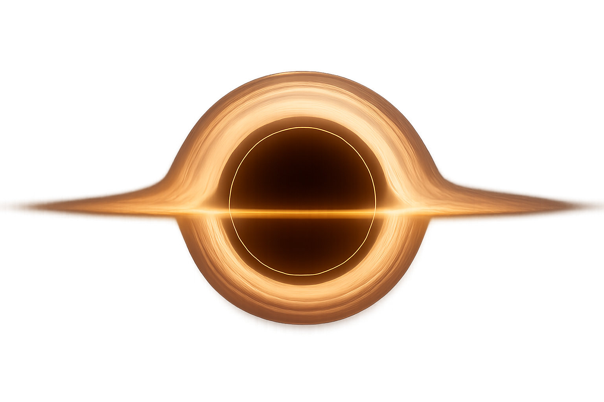

Gargantua y el Teseracto
El horizonte de sucesos donde el espacio y el tiempo se convierten en un lienzo.
La Singularidad y la Biblioteca
Un Gigante Supermasivo
Gargantua es un agujero negro supermasivo en rotación, con una masa de 100 millones de soles. Su disco de acreción, compuesto de gas y polvo sobrecalentado, ilumina los planetas que lo orbitan.
El Teseracto Oculto
Dentro de la singularidad, seres de una dimensión superior construyeron un Teseracto, un hipercubo tetradimensional. No es un lugar, sino una representación física de las cinco dimensiones.
El Puente Gravitacional
Desde el Teseracto, Cooper puede manipular la gravedad a través del tiempo, enviando los datos cuánticos a su hija Murph en el pasado y permitiéndole resolver la ecuación que salvará a la humanidad.
El Salto de Fe
Para escapar de la gravedad de Gargantua, Cooper se desprende del Endurance y se sumerge en el agujero negro, un acto suicida con la esperanza de enviar los datos cuánticos a la Tierra.
En lugar de ser destruido, es rescatado por el Teseracto. Allí, guiado por el robot TARS, comprende que "ellos" no son extraterrestres, sino una versión futura y evolucionada de la humanidad que construyó este puente para salvar a sus antepasados.
El Círculo se Cierra
Usando código Morse y la aguja de un reloj, Cooper transmite los datos a través de la gravedad, convirtiéndose en el "fantasma" de la infancia de Murph. Una vez completada su tarea, el Teseracto se colapsa y lo expulsa cerca de Saturno, donde es rescatado décadas después. Su viaje a través del tiempo y el espacio no solo salvó a la humanidad, sino que también cerró una paradoja que él mismo había iniciado.